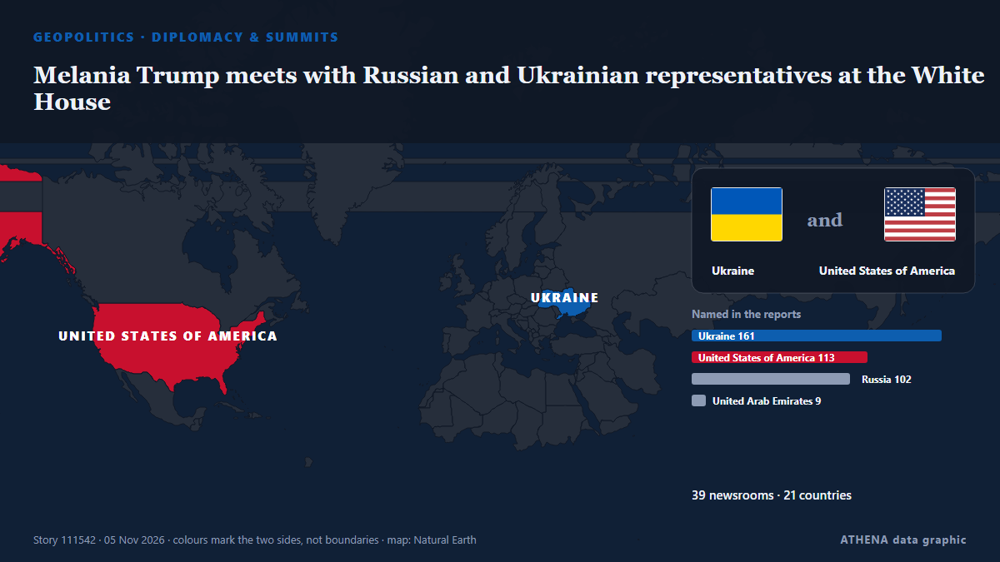

Melania Trump meets with Russian and Ukrainian representatives at the White House

WASHINGTON: First Lady Melania Trump will host “representatives” of Russia and Ukraine in Washington, the White House said Tuesday, without specifying a date or offering further details about who may… من Business Recorder
نشرته بشكل مستقل 39 مصدرًا في 21 دولة منذ 3 نوفمبر، وأول من نشره Business Recorder؛ والتغطية في ذروتها. يقدّر ATHENA الخطر بأنه معتدل (3.6/10)، ويعود ذلك أساسًا إلى خطورة الضرر الموصوف ونطاقه الجغرافي والقطاعي. الثقة 91٪ (مرتفعة)، وعدد المصادر المستقلة المؤكِّدة: 39، بمتوسط موثوقية للمصادر يبلغ 77٪. وسائل الإعلام حسب البلد: أوكرانيا (11), المملكة المتحدة (5), روسيا (4). التغطية: من 3 نوفمبر إلى 5 نوفمبر، 37 ساعة.
لماذا يهم: بدأ الغزو الروسي الشامل لأوكرانيا في فبراير 2022. تتابع هذه الصفحة المعارك والضربات على البنية التحتية والدبلوماسية المحيطة بالحرب كما تغطيها وسائل الإعلام حول العالم.
ما الذي تغيّر: 24 تقارير جديدة من 21 غرف أخبار خلال 24 ساعة حتى 5 نوفمبر.
العنوان الأول: Melania Trump to hold meeting with representatives of Russia, Ukraine on Thursday
تُعرض العناوين بالإنجليزية كما نُشرت.
نظرة سريعة
اختير وقُيِّم وكُتب وفق منهجية ATHENA المنشورة. لا يتدخل أي محرر في الأحداث بعينها. كيف يُنتَج ›
| 03 Nov 13:10 UTC | 10 |
|---|---|
| 03 Nov 15:10 UTC | 3 |
| 03 Nov 17:10 UTC | 2 |
| 03 Nov 19:10 UTC | 1 |
| 03 Nov 21:10 UTC | 1 |
| 03 Nov 23:10 UTC | 0 |
| 04 Nov 01:10 UTC | 1 |
| 04 Nov 03:10 UTC | 1 |
| 04 Nov 05:10 UTC | 0 |
| 04 Nov 07:10 UTC | 3 |
| 04 Nov 09:10 UTC | 6 |
| 04 Nov 11:10 UTC | 2 |
| 04 Nov 13:10 UTC | 3 |
| 04 Nov 15:10 UTC | 3 |
| 04 Nov 17:10 UTC | 2 |
| 04 Nov 19:10 UTC | 0 |
| 04 Nov 21:10 UTC | 0 |
| 04 Nov 23:10 UTC | 1 |
| 05 Nov 01:10 UTC | 2 |
| 05 Nov 03:10 UTC | 3 |
| 05 Nov 05:10 UTC | 4 |
| 05 Nov 07:10 UTC | 3 |
| 05 Nov 09:10 UTC | 2 |
| 05 Nov 11:10 UTC | 2 |
| 05 Nov 13:10 UTC | 1 |
| 05 Nov 15:10 UTC | 3 |
| 05 Nov 17:10 UTC | 1 |
| 05 Nov 19:10 UTC | 2 |
| 03 Nov 14:16 UTC | 0.0 |
|---|---|
| 04 Nov 01:49 UTC | 1.2 |
| 04 Nov 06:23 UTC | 2.0 |
| 04 Nov 09:32 UTC | 3.4 |
| 05 Nov 19:01 UTC | 4.7 |
| 05 Nov 21:49 UTC | 3.6 |
| 05 Nov 21:49 UTC | 3.6 |
لماذا هذه الأرقام
الأهمية
الخطر
الثقة
التغطية — من نشر الخبر ومتى
العنوان كما نُشر · يفتح الأصل- Business Recorder · باكستانMelania Trump to host Ukraine, Russia 'representatives' at White House
- Ukrainska Pravda (English) · أوكرانياUS first lady to bring together Ukrainian and Russian representatives at White House
- APA (English) · أذربيجانUS first lady Melania Trump to host Russia, Ukraine representatives at White House
- TASS (English) · روسياMelania Trump to hold meeting with representatives of Russia, Ukraine on Thursday
- Kyiv Independent · أوكرانياUkraine's ombudsman, sanctioned Russian commissioner invited to Melania Trump's White House event, source says
- Ukrinform (English) · أوكرانياMelania Trump to convene Russian and Ukrainian representatives at White House
- Kyiv Post · أوكرانياMelania Trump to Unite Russian, Ukrainian Representatives at White House
- Meduza (English) · روسياWhite House says Melania Trump will meet with representatives of Russia and Ukraine in Washington
- The Moscow Times · روسياMelania Trump to Host Russian and Ukrainian Delegations at White House
- Anadolu Agency (English) · تركياMelania Trump to host Russian, Ukrainian representatives at White House
- Türkiye Today · تركياMelania Trump to host Russian, Ukrainian representatives at White House
- The Hill · الولايات المتحدةMelania Trump hosting Ukraine, Russia representatives at White House
- Yonhap (English) · كوريا الجنوبيةMelania Trump to meet Ukrainian, Russian representatives at White House this week
- AzerNews · أذربيجانMelania Trump to host Russian, Ukrainian teams at White House
- Ukrainska Pravda (English) · أوكرانياMedia outlet reveals who will represent Ukraine and Russia at meeting with Melania Trump
- Ukrinform (English) · أوكرانياArakhamia, Lubinets to attend meeting with Melania Trump at White House – source
- RFE/RL (English) · INTFollowing Oleshky Truce, Melania Trump To Host Russia-Ukraine Talks
- Korea Herald · كوريا الجنوبيةMelania Trump to meet Ukrainian, Russian representatives at White House this week
- The Independent · المملكة المتحدةUkraine-Russia war latest: Kyiv launches fresh bombing raid on Russian retail giant
- Ukrainska Pravda (English) · أوكرانياZelenskyy awards Order of Princess Olha to Melania Trump
- Kyiv Post · أوكرانياZelensky Awards Melania Trump Ukraine’s Top Order of Princess Olha
- Kyiv Independent · أوكرانياZelensky awards Melania Trump Ukraine's Order of Princess Olga for humanitarian work
- Ukrinform (English) · أوكرانياZelensky awards Melania Trump Order of Princess Olga
- The Straits Times · سنغافورةUkraine's Zelenskiy awards Melania Trump state honour
- Anadolu Agency (English) · تركياZelenskyy awards Ukraine's Order of Princess Olga to US first lady Melania Trump
- New Straits Times · ماليزياUkraine's Zelenskyy awards Melania Trump state honour
- Free Malaysia Today · ماليزياUkraine’s Zelensky awards Melania Trump state honour
- Times of India · الهندZelenskyy honours Melania Trump for helping secure ceasefire in Russian-occupied Oleshky
- Asharq Al-Awsat (English) · المملكة العربية السعوديةUkraine’s Zelenskiy Awards Melania Trump State Honor
- The Independent · المملكة المتحدةZelensky awards Melania Trump one of Ukraine's highest honours
- APA (English) · أذربيجانKremlin spokesman reveals who may represent Russia at meeting with Melania Trump
- OilPrice.com · المملكة المتحدةRussia and Ukraine Head to White House for Melania Trump-Led Talks
- BBC News · المملكة المتحدةZelensky gives Melania Trump Ukraine's highest award after Oleshky ceasefire
- The Independent · المملكة المتحدةZelensky has awarded Melania Trump one of Ukraine's highest honours. Here's why
- Ukrainska Pravda (English) · أوكرانياKremlin reveals who could travel to US for meeting with Melania Trump
- Meduza (English) · روسياRussia’s human rights commissioner Yana Lantratova will lead Moscow’s side at Melania Trump’s Washington meeting with Ukrainian officials — if her traveling party can get visas
- Ada Derana · سريلانكاZelensky gives Melania Trump Ukraine's highest award after Oleshky ceasefire
- CNA (Channel NewsAsia) · سنغافورةZelenskyy awards US first lady Ukrainian civilian honour
- The Jerusalem Post · إسرائيلZelensky awards Melania Trump Ukraine's highest honor for women after brokering Oleshky ceasefire
- NDTV · الهندUkraine's Zelensky Awards Melania Trump Highest State Honour